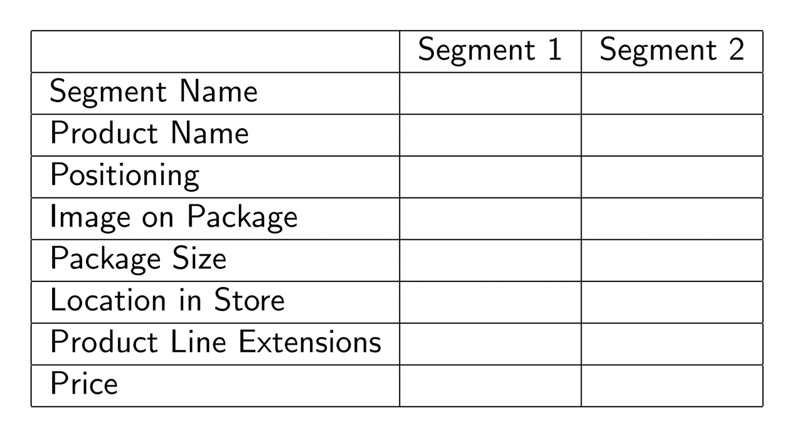
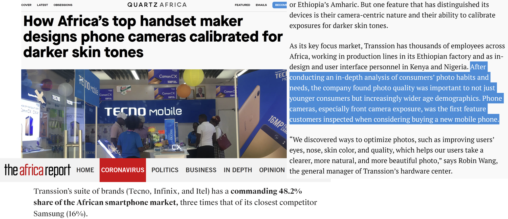
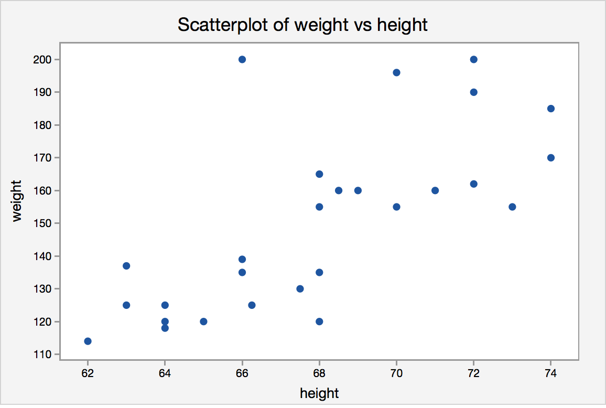
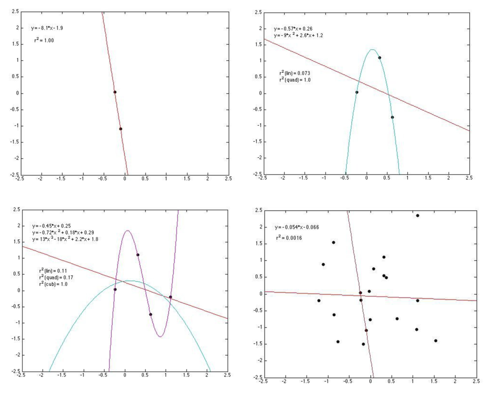

Heterogeneous Demand
UCSD MGT 100 Week 06
Let’s reflect

Segmentation Case study: Quidel
- Leading B2B manufacturer of home pregnancy tests
- Tests were quick and reliable
- Wanted to enter the B2C HPT market
- Market research found 2 segments of equal size;
what were they?


Het. Demand Models
Discrete heterogeneity by segment
Continuous heterogeneity by customer attributes
Individual-level demand parameters
- We'll do 1 & 2
MNL Demand
- Recall our MNL market share function \(s_{jt}=\frac{e^{x_{jt}\beta-\alpha p_{jt}}}{\sum_{k=1}^{J}{e^{x_{kt}\beta-\alpha p_{kt}}}}\)
- What is \(\alpha\)?
- What is \(\beta\)?
- What limitations does this model have?
- Incorporating customer heterogeneity into demand models can enable a rich array of segment-specific or person-specific customer analytics
Why add het.?
MNL can estimate quality; Het demand estimates quality & fit
Enables “policy experiments” for variables we {manage,can measure,predict sales}
- Pricing: price discrimination, two-part tariffs, fees, targeted coupons - Customer relationships: Loyalty bonus, referral bonus, freebies - Social media: Posts, likes, shares, comments, reviews - Advertising: Ad frequency, content, media, channels - Product attributes: Targeted attributes, line extensions, brand extensions - Distribution: Partner selection, intensity/shelfspace, exclusion, in-store environmentCommon individual- & market-level factors (\(\gamma_t\), \(\gamma_i\))
- E.g., customer income, usage intensity, category experience, etc. - E.g., market size, history, population density, - Changes over time could interact with product attributes to affect demandQuantifies M&A results; oft used in antitrust
1. Discrete heterogeneity by segment
- Assume each customer \(i=1,...,N\) is in exactly 1 of \(l=1,...,L\) segments with sizes \(N_l\) and \(N=\sum_{l=1}^{L}N_l\)
- Assume preferences are homogeneous within segments, and heterogeneous between segments
- Replace \(u_{ijt}=x_{jt}\beta-\alpha p_{jt}+\epsilon_{ijt}\) with \(u_{ijt}=x_{jt}\beta_l-\alpha_l p_{jt}+\epsilon_{ijt}\)
- That implies \(s_{ljt}=\frac{e^{x_{jt}\beta_l-\alpha_l p_{jt}}}{\sum_{k=1}^{J}e^{x_{kt}\beta_l-\alpha_l p_{kt}}}\) and \(s_{jt}=\sum_{l=1}^{L}N_l s_{ljt}\)
- We will do this with predefined segments based on usage
- We can also estimate segment memberships. Pros and cons?
2. Continuous heterogeneity by customer attributes
Let \(w_{it}\sim F(w_{it})\) be observed customer attributes that drive demand, e.g. usage
\(w_{it}\) is often a vector of customer attributes including an intercept
Assume \(\alpha=\gamma w_{it}\) and \(\beta=\delta w_{it}\)
Then \(u_{ijt}=x_{jt}\delta w_{it}- p_{jt}\gamma w_{it} +\epsilon_{ijt}\) and
\[s_{jt}=\int \frac{e^{x_{jt}\delta w_{it}- p_{jt}\gamma w_{it}}}{\sum_{k=1}^{J}e^{x_{jt}\delta w_{it}- p_{jt}\gamma w_{it}}} dF(w_{it}) \approx \frac{1}{N_t}\sum_i \frac{e^{x_{jt}\delta w_{it}- p_{jt}\gamma w_{it}}}{\sum_{k=1}^{J}e^{x_{jt}\delta w_{it}- p_{jt}\gamma w_{it}}}\]
- We usually approximate this integral with a Riemann sumWhat goes into \(w_{it}\)?
What if \(dim(x)\) or \(dim(w)\) is large?
3. Individual demand parameters
Assume \((\alpha_i,\beta_i)\sim F(\Theta)\)
- Includes the Hierarchical Bayesian Logit we talked about in weeks 3 & 4Then \(s_{jt}=\int\frac{e^{x_{jt}\alpha_i-\beta_i p_{jt}}}{\sum_{k=1}^{J}e^{x_{jt}\alpha_i-\beta_i p_{jt}}}dF(\Theta)\)
Typically, we assume \(F(\Theta)\) is multivariate normal, for convenience, and estimate \(\Theta\)
We usually have to approximate the integral, often use Bayesian techniques (MSBA)
- Let's talk through how this worksOr, we can estimate \(F\) but that is very data intensive
In theory, we can estimate all \((\alpha_i,\beta_i)\) pairs without \(\sim F(\Theta)\) assumption, but requires numerous observations & sufficient variation for each \(i\)
How to choose?
Humans choose the model
How do you know if you specified the right model?
- Hints: No model is ever "correct." No assumption is ever "true" (why not?)How do you choose among plausible specifications?
Pros and cons of model enrichments or simplifications?

Model specification
Bias-variance tradeoff
- Adding predictors always increases model fit - Yet parsimony often improves predictionsWhat criteria help choose a model?
- Modeling objectives - Theoretical properties - Flexibility properties - Precedent - In-sample fit - Prediction quality - Computational properties

Cross-validation
- Exercise to reduce overfitting risk among a set of models \(m=1,...,M\). Algorithm:
- Randomly divide the data into \(K\) distinct folds
- Hold out fold \(k\), use remaining data to estimate model \(m\), make predictions for fold \(k\); store prediction errors
- Repeat 2 for each \(k\)
- Repeat 2&3 for every model \(m\)
- Retain the model with minimum prediction errors
Ex-post evaluations
- Can a model withstand changes in the environment?
- Non-random holdouts are strong tests, but can only be retrospective
Cov(Power, Responsibility)
- Customer data needs to be high quality (GIGO, Errors-in-variables biases)
- Implementation needs to consider qualitative factors {effectiveness, legality, morality, privacy, conspicuousness, equity, reactance, costs, speed, understanding}
- Guiding principle (not a rule):
Using data to legally, genuinely serve customers’ interests is usually OK - Using private data against customer interest can harm some consumers, break laws, or incur liability. Litigation can kill a start-up
- Major US laws: COPPA, GLBA, HIPAA, patchwork of state laws
- Guiding principle (not a rule):
- Heterogeneity in a demand model does not resolve price endogeneity

- T/F: Adding random predictors into \(X\) can decrease OLS \(R^2\).
Class script
- Add heterogeneity to MNL model
- Individual-level heterogeneity via price-minutes interaction
- Segment-level heterogeneity via segment-attribute interactions
- Both

Wrapping up
Homework
- Let’s take a look

Recap
Heterogeneous demand models enable personalized and segment-specific policy experiments
Demand models can incorporate discrete, continuous and/or individual-level heterogeneity structures
Heterogeneous models fit better, but may predict worse if over-specified

Going further